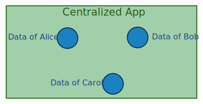
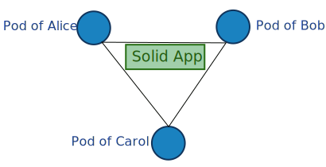
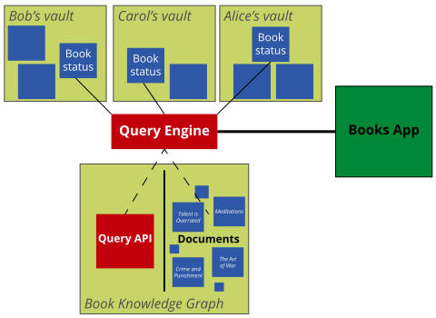
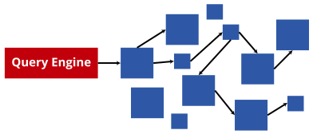

Solid
a Web-based decentralization ecosystem
Users are in full control over their own data
Built on Web standards
→ How to query efficiently?
Personal data pods
Full control of where your pod is stored and who can access it

Pods can store any kind of data
Personal data, photo's, friends, ...

Data become decoupled from apps


-
Today: data and app are tightly coupled
No choice over where and how data is stored, and who can access it
-
Solid: data and app are decoupled
Apps require read/write permissions from the user
A paradigm shift in app design
-
Storage of data is decentralised
Data is stored in the user's pod instead of in the app
-
Combining multiple data pods
Apps become views over one or more data pods
-
Explicit access control
Apps can only view or modify (parts of) your data after explicit approval
Data is spread over many sources.
How to build efficient Solid apps?
Queries as abstraction layer
Hide the complexities of reading and writing for app developers
-
Say what needs to happen, not how
Declarative queries hide complexities of data retrieval
-
Queries are reusable
Queries are not API-specific
-
Execution via a generic, reusable query engine
Abstracts away complexities for executing queries
Comunica is a meta query engine
-
Collection of building blocks
Independent modules implement specific functionality
-
Runs anywhere (Web browser, server-side, ...)
Written in TypeScript/JavaScript
-
For research and production-ready
Open governance under the Comunica Association
How to query within the Solid ecosystem?

Link Traversal-based Query Processing
Query engine follows links based on the Linked Data principles

Traditional link traversal has problems
-
Termination
Many documents on the Web with many links to follow
Worst-case: download full Web for each query execution
-
Speed
Following links is expensive: setup TCP/HTTP connection
No indexing and query planning
-
Completeness
Depending on seed documents, different results may be obtained
Link traversal works quite well for Solid
-
Exploit structural properties of Solid pods
Pods use Linked Data Platform
Guaranteed to find all files in a user's pod
-
Make use of document-based indexes
Solid type index: links to all resources of a certain class
-
Opportunities for improvement
Number of links is not the main bottleneck anymore
Inefficient query plan is the new bottleneck